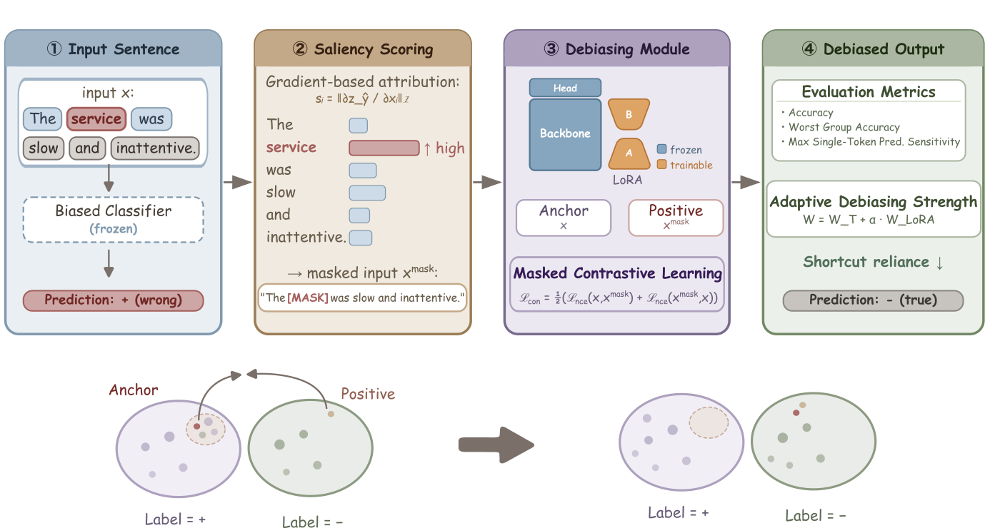

J Li, S Tang, Gün Kaynar, S Du, C Kingsford
arXiv preprint arXiv:2604.12277, 2026
Pretrained text encoders are prone to shortcut learning, relying on token-label correlations that fail once the distribution shifts in deployment. Existing shortcut mitigation methods mainly operate at training time and assume access to training data, training dynamics, or shortcut annotations, which are hardly available during deployment, where only the converged model remains. We show that this model alone suffices to mitigate shortcuts during deployment: a biased model internalizes a signal of its learned shortcuts that can be captured via unsupervised gradient-based attribution. We further prove that deployment-time mitigation is information-theoretically upper-bounded by training-time mitigation. Nevertheless, exploiting this gradient signal, our proposed unsupervised deployment-time shortcut mitigation framework for pretrained text encoders, Shortcut Guardrail, recovers substantial performance under shortcut distribution shift, matching or outperforming training-time baselines across sentiment classification, toxicity detection, and natural language inference.
